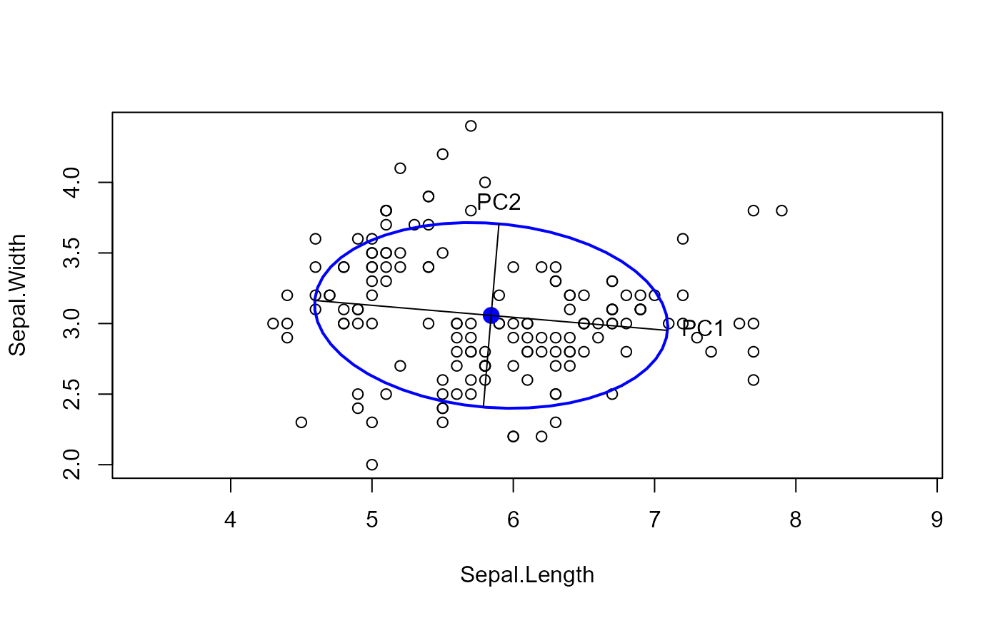
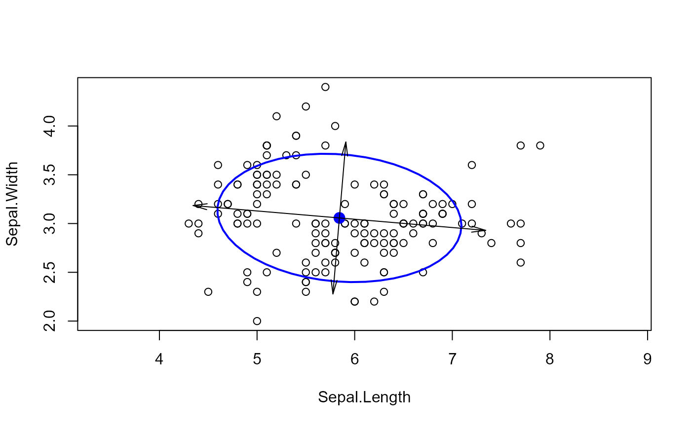

A function to draw the principal axes of a 2D ellipse from a correlation, covariance or sums of squares and cross products matrix in an existing plot.
Arguments
- x
A square positive definite matrix at least \(2 \times 2\) in size. It will be treated as the correlation or covariance of a multivariate normal distribution.
- centre, center
The center of the ellipse
- scale
If x is a correlation matrix, then the standard deviations of each parameter can be given in the scale parameter. This defaults to
c(1, 1), so no rescaling will be done.- which
An integer vector to select which variables from the object
xwill be plotted. The default is the first 2.- level
The coverage level of a simultaneous region of the ellipse. The default is 0.95, for a 95% region. This is used to control the size of the ellipse.
- radius
The size of the ellipsoid may also be controlled by specifying the value of a t-statistic on its boundary. This defaults to the square root of a chi-square statistic for a given
levelon 2 degrees of freedom, however in a small sample ofnobservations, a more accurate value issqrt(2 * qf(level, 2, n - 1 )).- extend
Fraction to extend the
radius(default: 0). For example, useextend = 0.1to extend the ellipse axes by 10%.- labels
Either a logical value, a character string, or a character vector of length 2. If
TRUE, the default, the axes are labeled "PC1", "PC2". If a single character string, the digits 1, and 2 are pasted on the end.- label.ends
A vector of indices in the range
1:4indicating which ends of the axes should be labeled, corresponding to a selection of rows of the 4 x 2 matrix of axes end points. Values1:2represent the minimum and maximum of the first dimension respectively. Values3:4represent the minimum and maximum of the second dimension. Default:c(2, 4).- label.pos
Positions of text labels relative to the ends of the axes used in
textfor the four possiblelabel.ends. 1, 2, 3, 4 represent below, to the left, above and to the right. The default,c(2, 4, 1, 3), positions the labels outside the axes.- type
Character. Draw
"lines"or"arrows".- ...
Value
Invisibly returns a 4 x 2 matrix containing the end points of the axes in pairs (min, max) by rows.
See also
Other covariance ellipses:
covEllipses(),
ellipse.box(),
ellipse3d.axes()
Examples
data(iris)
cov <- cov(iris[,1:2])
mu <- colMeans(iris[,1:2])
radius <- sqrt(qchisq(0.68, 2))
plot(iris[,1:2], asp=1)
car::ellipse(mu, cov, radius = radius)
res <- ellipse.axes(cov, center=mu, level = 0.68,
labels = TRUE)

res
#> Sepal.Length Sepal.Width
#> Xmin 4.594510 3.163463
#> Xmax 7.092157 2.951204
#> Ymin 5.788148 2.407969
#> Ymax 5.898519 3.706698
# try some options
plot(iris[,1:2], asp=1)
car::ellipse(mu, cov, radius = radius)
abline(h=mu[2], v=mu[1], col = "grey")
ellipse.axes(cov, centre=mu, level = 0.68,
labels = "Dim", label.ends = 1:4,
lwd = 2, lty = 2, col = "red",
cex = 1.5)
# draw arrows rather than lines
plot(iris[,1:2], asp=1)
car::ellipse(mu, cov, radius = radius)
ellipse.axes(cov, center=mu, level = 0.68,
type = "arrows", extend = 0.2)
